”אז בבית הספר
על הקיר תמונה,
והאיכר חורש בה
את האדמה.
וברקע, הברושים
שמי שרב חיוורים
האיכר יצמיח לנו לחם
שנהיה גדולים.“ – עלי מוהר
2. חקלאות וסביבה#
החקלאות היא פעילות אנושית שמטרתה לספק מזון באיכות נאותה ובכמות מספקת לבני האדם. פרק זה דן ביחסי הגומלין בין החקלאות היבשתית לבין הסביבה (בחקלאות הימית נדון בפרק 10). ההשפעות ההדדיות בין החקלאות לסביבה מתבטאות בכמה דרכים, כגון: צריכת מים, פיזור חומרי הדברה ושחרור חומרי הזנה (דשנים, נוטריינטים).[1] יש שלוש עובדות בסיסיות הממחישות את עוצמת ההשפעה של הפעילות החקלאית על הסביבה ועל האקו-סיסטמה היבשתית: (1) שטח גדול מאוד בהיקפו מוקדש לפעילות חקלאית; (2) החקלאות היא עיסוק עתיק יומין; (3) כ-70% מצריכת המים של האנושות מושקעים בחקלאות (ראו פרק 9). תיקון ההַגְרָעָה (דֶּגְרָדַצְיָה) של שטחים חקלאיים ושטחים שנפגעו בעבר ושל הקרקעות (soils) הנמצאות בהם הוא אחד האתגרים העיקריים בפתרון בעיות הסביבה, ובכללן ההתחממות הגלובלית.[2] בפרק הזה נפרט את סוגי החקלאות ושיטות העיבוד החקלאי (2.1), נתאר את היקף הפעילות החקלאית (2.2), נסקור מגמות בתפוקה החקלאית (2.3), ונבחן את השפעת הפעילות החקלאית על הקרקע (2.4). לאחר מכן נסקור את החומרים המשתחררים לסביבה עקב פעילות חקלאית: חומרי הדברה (2.5) ודשנים (2.6). נלמד על תרומת החקלאות לפליטות גזי החממה (2.7) ומהי ההשפעה הצפויה של שינויי אקלים על החקלאות (2.8). לבסוף, נסקור את דרכי ההתמודדות – חקלאות מקיימת ואורגנית (2.9) ושינוי הרגלי תזונה (2.10).
2.1 סוגי החקלאות והעיבוד החקלאי#
במהלך ההיסטוריה חלו התפתחויות רבות בשיטות העיבוד החקלאי או בסוגי החקלאות. ככלל יש ארבעה סוגי חקלאות הפועלים כיום: (1) חקלאות מסורתית (traditional agriculture) מתבססת על עבודת אנשים ובעלי חיים מבויתים ומותאמת למאפייני השטח והאקלים, אגב ניצול הפרשות בעלי חיים ושאריות צמחים לצורך דישון ושימוש מועט במדבירים. לפיכך היא מוגדרת חקלאות מבוססת משאבים (resource based). שיטות העיבוד של החקלאות המסורתית נמצאו עד לאחרונה בנסיגה ופינו את מקומן לחקלאות תעשייתית. כיום יש מגמת חזרה אל שיטות אלה במגוון אזורים, אך עדיין בהיקף קטן; (2) חקלאות תעשייתית, הידועה גם בכינוי חקלאות קונבנציונלית (industrial agriculture), היא שיטת העיבוד הנפוצה ביותר כיום, והיא מזינה את מרבית בני האדם על פני כדור הארץ. היא מתבססת על ביקוש למזון, כפי שיפורט בהמשך (demand based) ונשענת על מיכון רב וגידולים חד-זניים בשטחים גדולים (mono-culture), תוך כדי שימוש נרחב במדבירים ובדשנים כימיים, כולל הדברת הקרקע עצמה בעיקר על ידי קוטלי עשבים; (3) חקלאות מקיימת (sustainable agriculture / regenerative agriculture / agro-ecology)[3] מבוססת גם היא על משאבים ונרחיב עליה בהמשך; (4) חקלאות אורגנית משתמשת בעקרונות של חקלאות מקיימת, אך בכמה הבדלים שיפורטו בהמשך. גם חקלאות זו מבוססת משאבים.
לאחרונה נעשה שימוש הולך וגובר במכשור שמטרתו לאסוף בשדה מידע רב ככל האפשר ברמת פירוט עיתית ומרחבית מרבית (לוויינים, רחפנים, חיישנים בקרקע ועוד), המלווה בעיבוד מהיר ומדויק של הנתונים הללו באמצעות מחשוב חזק. הפעילות הזאת נקראת חקלאות מדייקת (precision agriculture). במרבית סוגי החקלאות המוזכרים לעיל נעשה כיום שימוש בכלים של חקלאות מדייקת, אשר מייעלת ומצמצמת שימוש במשאבים, כגון מים, חומרי הזנה (למשל חנקן)[4] ומדבירים, מגבירה תפוקות, משפרת את איכות הגידולים ומגדילה את הרווח של החקלאים, והכול תוך כדי מזעור הנזק הסביבתי שגורמת הפעילות החקלאית.[5] כך למשל בשנים האחרונות נעשה שימוש ברחפנים לא רק לאיסוף מידע, אלא גם כדי לפזר חומרי הדברה בצורה מדויקת ויעילה.
2.2 היקף הפעילות החקלאית#
כשליש מהשטח הכולל של היבשות – כ-50 מיליון קמ“ר מתוך שטח כולל של כ-150 מיליון קמ“ר – מעובד או מנוצל לצרכים חקלאיים.[6] כ-15 מיליון קמ“ר נוספים משטח היבשות מכוסים בקרח ועוד כ-29 מיליון קמ“ר הם שטחים שאינם ראויים לחקלאות: מדבריות, משטחי סלע וקרקעות מלוחות. הפעילות החקלאית מנצלת אפוא קרוב למחצית מהשטח הפורה של היבשות (איור 2.1). חשוב להדגיש שמבין ענפי החקלאות, גידול בעלי חיים מנצל את חלק הארי של השטחים החקלאיים, כ-77%, כולל השטח הדרוש לגידול מזון לבעלי חיים מבויתים, כגון מספוא וגידולים אחרים.[7] לעומת זאת, גידולים עונתיים ומטעים למאכל בני אדם מנצלים יחד ב-23% מן השטחים החקלאיים (איור 2.1), ומספקים 82% מצריכת הקלוריות ו-63% מצריכת החלבונים של האנושות (איור 2.1).
יש מנעד רחב מבחינת שיעור הקרקע המוקצה לחקלאות בארצות שונות, ולפיכך קיים פער גדול בין מדינות שונות ביחס של שטח חקלאי או שטח מעובד לאדם. עובדה זו יוצרת בעיות גאופוליטיות חריפות. כך למשל, בסין יש כ-0.9 דונם (900 מ“ר) של אדמה מעובדת לאדם (4.5 דונם כולל שטחי מרעה), בעוד שבאפריקה יש כ-2.5 דונם לאדם (10.3 דונם כולל מרעה) ובברזיל יש כ-4 דונם לאדם (13.6 דונם כולל מרעה).[8] עובדה זאת מסבירה, יחד עם גורמים נוספים – גורמים כלכליים, עלייה בצריכת מזון מן החי בסין וההתחממות הגלובלית[9] – את ההשקעה המואצת של סין בפיתוחים לשיפור התנובה החקלאית ובחכירת קרקעות באפריקה ובדרום אמריקה לצורכי גידולי מזון כדי להבטיח לאזרחיה ביטחון תזונתי. חכירה זאת יוצרת התנגדות עזה בחלק מהמדינות שבהן היא מתרחשת.
בני אדם עוסקים בגידול מזון כבר אלפי שנה. ביות צמחים לצורכי גידול מזון החל לפני כ-11,000 שנה בכמה מוקדים במזרח התיכון, ומעט מאוחר יותר ובאופן בלתי תלוי החל גם בסין ובאמריקה.[10] במקביל, החלו בני האדם לביית בעלי חיים כמו בקר, עיזים, כבשים וחזירים. כלבים בויתו הרבה לפני כן.[11] כלומר, יש אזורים רבים בעולם, דוגמת סין, יפן, הודו, המזרח התיכון ואירופה, שבהם הפעילות החקלאית, כגון חריש ותיחוח הקרקע, נמשכת כבר אלפי שנים, ועל כן יש לה השפעה מצטברת, ניכרת מאוד על תכונות הקרקע ועל מערכות אקולוגיות טבעיות (להרחבה ראו את המשך הפרק ופרק 8).
הפעילות החקלאית משפיעה באופן ניכר על מגוון המינים, וגורמת לכך שמינים ספורים יחסית של צמחי מאכל ובעלי חיים מבויתים מנצלים חלק ניכר מהמשאבים הנמצאים על פני היבשות: שטחי קרקע, מזון, מים וחומרי הזנה. כמו כן יש לה השפעה על חרקים מאביקים ומינים נוספים של חרקים. למשל, נטען שקיים יחס הופכי בין כמות הדישון לבין מגוון המינים וכמות החרקים המאביקים בשדה,[12] וכן דווח שהפחתת דישון בחנקן גורמת לשיפור במגוון המינים באזורים מסוימים.[13] יתרה מזאת, בני האדם צורכים מספר קטן יחסית של מיני צמחים. מתוך מעל 25,000 מיני צמחים אכילים,[14] רק כמה מאות משמשים למאכל; 103 מיני צמחים תורמים 90% מהאנרגיה[15] של מזון לבני האדם,[16] ושלושה צמחים – אורז, חיטה ותירס – תורמים יותר ממחצית האנרגיה שבני האדם צורכים.[17] מסיבה זו שטחי הגידול של צמחי המאכל של בני האדם דוחקים את צמחי הבר.[18] חוסר איזון דומה קיים גם בנושא בעלי החיים שבני האדם בייתו, יונקים ועופות כאחד. לדוגמה, הביו-מסה (המשקל הכולל) של המקנה – בקר, חזירים, עזים וכבשים – גדול בערך פי 14 מהביו-מסה של כל היונקים הלא מבויתים על פני היבשה.[19] כלומר ישנה ירידה במספר המינים הנפוצים מה שיוצר פגיעה במגוון הביולוגי הנחוץ לעמידות המערכת האקולוגית בפני עקות סביבתיות (ראו פרק 7). מעבר לכך, הולך ומתברר שבריאות בני האדם, בריאות הסביבה ובריאות בעלי החיים, מבויתים ופראים קשורים זה בזה, ויש לטפל בהן במשולב.[20]
כדי להעשיר את המגוון הביולוגי של צמחי המאכל ובעלי החיים המבויתים מושקעים מאמצים בפיתוח זנים חדשים של צמחי מאכל ובעלי חיים מבויתים בעלי ערך תזונתי גבוה ועמידות מפני מזיקים ומחלות. כך למשל יש יותר מ-80,000 זנים של אורז, כולם מאותו מין (Oryza sativa). לצורך כך הוקמו בעשורים האחרונים ”בנקי זרע“ (genebanks)[21] בכמה מוקדים בעולם המקבלים כל העת תרומות של זרעים ממדינות רבות.[22] מאמצים דומים מושקעים גם בפיתוח תרופות שמקורן בעולם החי והצומח.[23]
מהבחינה הסביבתית יש שיקול נוסף שיש להביאו בחשבון בנושא גידול מזון: גידול מקומי לעומת גידול באזורים המתאימים ביותר לגידול. מחד גיסא, גידול מקומי חוסך אנרגיה בשינוע המזון ובהפצתו ומחזק את הביטחון התזונתי של התושבים. מאידך גיסא, גידול מקומי באזורים שחונים גורם לעיתים לצריכת יתר של מים להשקיה, מחייב שימוש בשיטות עיבוד שאינן בנות קיימה ויכול להשפיע על תכיפותם של שיטפונות ועל מידת החידור (infiltration) של מים לתת-הקרקע.[24] כיום כ-80% מכלל החיטה, התירס, האורז והסויה מיוצרים בתשע מדינות בלבד בעבור כ-130 מדינות.[25] גם גידולים אחרים כמו אננס או בננות מיוצרים כיום במדינות מעטות. מציאות זו, שמגדילה את מרחק ההובלה ויוצרת תלות גבוהה של מיליארדי אנשים בגידולים הנעשים במעט מקומות, עלולה להחמיר כאשר אחד מאזורי המפתח נפגע עקב אסון טבע, מגפה או מלחמה. כדי לשפר את הביטחון התזונתי של כלל האנושות, פותח מדד הבוחן פרמטרים שונים לגידול מזון מקומי מול יבוא מזון בעבור כל מדינות העולם, תוך ניסיון לנתח גם מגמות עתידיות.[26]
{kind=link}
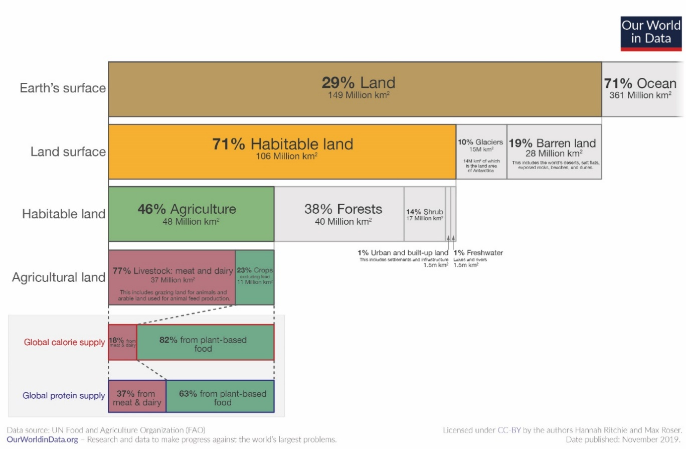
Fig. 5 איור 2.1: פירוט השטחים המשמשים את החקלאות על פני כדור הארץ.#
מקור – Our World in Data, https://ourworldindata.org/land-use ; Reprinted with permission.
2.3 מגמות בתפוקת החקלאות#
כיוון שאוכלוסיית העולם גדלה בכמה עשרות מיליוני בני אדם מדי שנה בשנה ובמקביל רמת החיים שלה עולה, קיים צורך תמידי להגדיל את תנובת החקלאות. בשנים 2000–2019 גדלה כמות המזון הצמחי המיוצר בעולם מ-6 מיליארדי טון לכ-9 מיליארדי טון (איור 2.2).[27] ראוי לשים לב לעלייה בייצור שמן אשר חלק ניכר ממנו הוא שמן דקלים המיועד לייצור אנרגיה (להרחבה בנושא ביו-דלקים, ראו פרק 3). הגידול בייצור החקלאי תואם את הגידול באוכלוסיית העולם ואת העלייה ברמת החיים, עלייה המשתקפת גם ברמת התזונה של בני האדם. סוכנויות האו“ם וגופים אחרים עוקבים מקרוב אחר מצב התזונה של בני האדם ברחבי העולם, והדיווחים מתעדכנים מדי שנה בשנה (איורים 2.3, 2.4). לסטר בראון (Brown) חזה בספרו Mobilizing to Save Civilization שנכתב ב-2009 כי בלי שינוי במצב התזונה העולמי, בשנת 2015 יהיו יותר מ-1.2 מיליארד אנשים הסובלים מתת-תזונה.[28] תחזית זאת לא התממשה, ויתרה מכך הנתונים לגבי מספר האנשים הסובלים מתת-תזונה נמוכים בכ-200 מיליון אנשים בהשוואה למובא בספרו של בראון (איור 2.3), כנראה בגלל קושי באיסוף נתונים בהיקף עולמי, והקושי בהגדרה של תת-תזונה על ידי העוסקים בתחום. באיור 2.3 רואים שעד שנת 2014 היה היקף הרעב בעולם במגמת ירידה, משנת 2014 ועד 2017 התייצב המצב והחל משנת 2017 חלה עלייה במספר האנשים הסובלים מתת-תזונה בעולם, אף שבשנת 2020 היו פחות אנשים רעבים בהשוואה לשנת 2005. איור 2.4 מציג את שיעור האנשים הרעבים ומצביע על דפוס דומה בהבדל אחד: העלייה בשיעור האנשים הרעבים מתונה יותר, כיוון שבשנים הללו מספר האנשים הכולל בעולם עלה בכ-80 מיליון אנשים בכל שנה. עם זאת, דוח של הסוכנות למעקב אחרי רעב (GNAFC)[29] משנת 2025 מראה שמאז 2020 (השנה האחרונה המובאת באיור 2.3), מספר האנשים הסובלים מתת-תזונה המשיך לטפס.[30] שיטות איסוף הנתונים של ה-GNAFC שונות מאלה של ארגון המזון והחקלאות של האו“ם –Food and Agriculture Organization of the United Nations – (להלן: FAO) שתוצאותיהם מופיעות באיורים 2.3 ו-2.4, ולכן הנתונים שהם מציגים שונים זה מזה. לענייננו ההבדלים אינם מהותיים וחשוב לראות את המגמה הכללית ואת העובדה שרק שליש ממקרי תת-התזונה מיוחס לגורמים סביבתיים ושני שלישים נובעים ממלחמות וממשברים כלכליים. על כך נוספת העובדה שכשליש מכמות המזון המיוצרת בעולם יורד לטמיון (ואחראי על כ-10% מפליטות גזי החממה).[31] נתון זה מעיד על אפשרות לשפר את מצב התת-תזונה ללא מחיר סביבתי ניכר,[32] באמצעות הפחתת הפגיעה של מזיקים (ראו בהמשך), יצירת מנגנוני חלוקה יעילים יותר של עודפי מזון, הפחתת בזבוז מזון,[33] וכמובן באמצעות פתרון קונפליקטים מדממים ברחבי העולם.
בבואנו לבחון את מצב התזונה יש להביא בחשבון גם את עלות המזון, אשר מאז שנת 2000 יותר מהכפילה את עצמה (איור 2.5). עליית המחיר יצרה בעיה עולמית חמורה, שכן בעבור אנשים המרוויחים מעט, קניית מזון תופסת חלק נכבד מסל ההוצאות שלהם. מצב זה הוביל לחוסר שקט חברתי ופוליטי במוקדים רבים בעשורים האחרונים.[34] למרות כל זאת, לפחות מבחינת מצב התזונה של ילדים בעולם נראה שבעשורים האחרונים חל שיפור המתבטא בירידה במידת העיכוב בגדילה ((stunting (איור 2.6). עם זאת, בדוח אחר של ה-FAO משנת 2021, מוצגת תמונה עגומה מעט יותר משום שהדוח אינו מתמקד בשיפור בין שנת 2000 לשנת 2020, אלא בפער הקיים עדיין בהשוואה ליעדי האו“ם לשנת 2030.[35]
{kind=link}
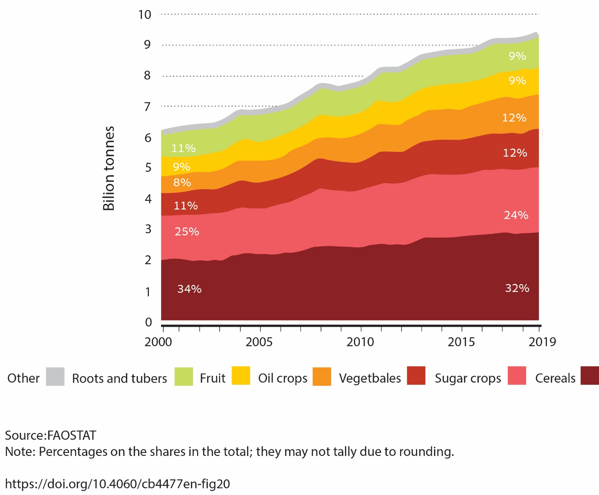
Fig. 6 איור 2.2: תנובת חקלאות (צמחים ומוצריהם) בשנים 2000–2019.#
מקור – FAO (2021) (FIG 20); https://doi.org/10.4060/cb4477en CC BY-NC-SA 3.0 IGO; Reprinted with permission.
{kind=link}
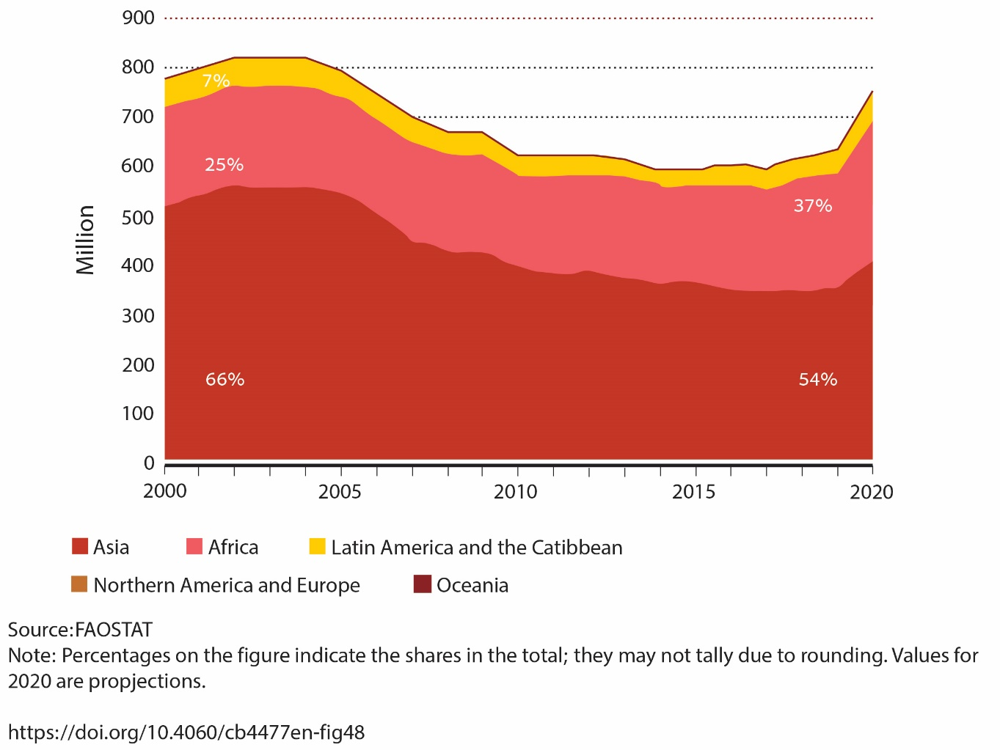
Fig. 7 איור 2.3: מספר האנשים הסובלים מתת-תזונה באזורים שונים בעולם בשנים 2000–2020.#
מקור – FAO (2021) (FIG 48), https://doi.org/10.4060/cb4477en CC BY-NC-SA 3.0 IGO; Reprinted with permission.
{kind=link}
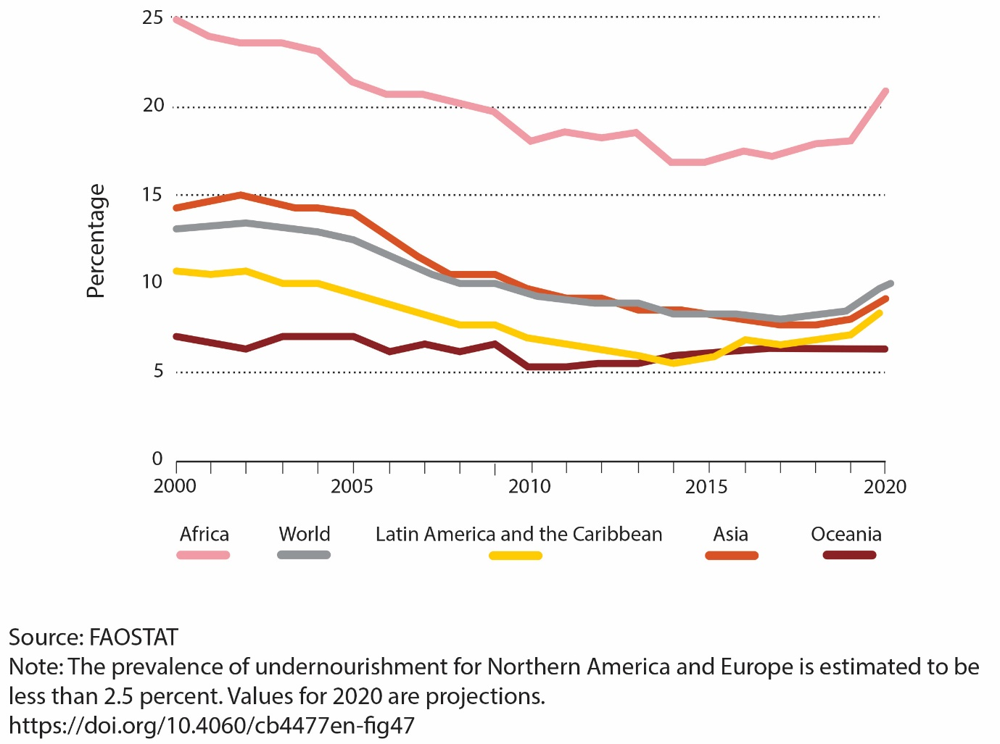
Fig. 8 איור 2.4: שיעור האנשים הסובלים מתת-תזונה מתמדת באזורים שונים בעולם.#
מקור – FAO (2021) (FIG 47), https://doi.org/10.4060/cb4477en CC BY-NC-SA 3.0 IGO; Reprinted with permission.
{kind=link}
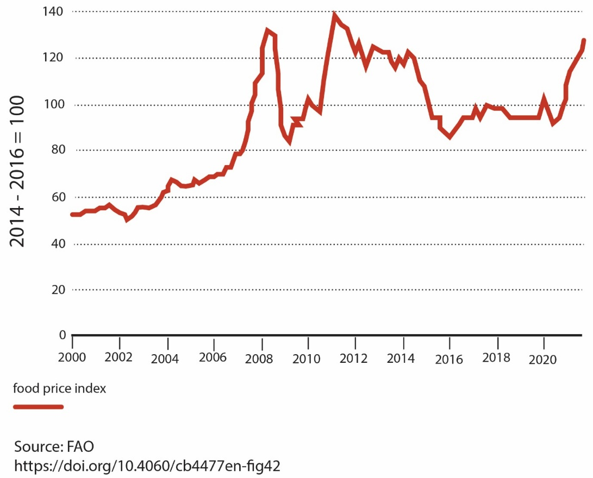
Fig. 9 איור 2.5: מחיר המזון בשנים 2000–2022 (לגבי חישוב אינדקס עלות המזון (הצמוד למדד) – ראו את הדוח של FAO המצוטט בתחתית האיור.#
מקור – FAO (2021) (FIG 42), https://doi.org/10.4060/cb4477en CC BY-NC-SA 3.0 IGO; Reprinted with permission.
{kind=link}
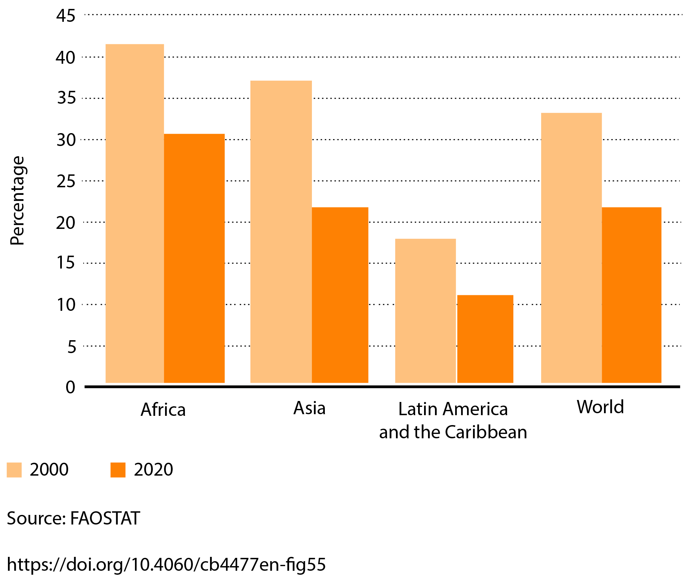
Fig. 10 איור 2.6: שיעור הילדים מתחת לגיל חמש הסובלים מעיכוב בגדילה, השוואה בין שנת 2000 לשנת 2020.#
מקור – FAO (2021) (FIG 55), https://doi.org/10.4060/cb4477en CC BY-NC-SA 3.0 IGO; Reprinted with permission.
2.4 השפעת החקלאות על קרקעות#
כמות המזון שמייצרת האנושות תלויה בכמה פרמטרים, שבחלקם נדון בסעיף זה. הראשון ביניהם הוא תנובת (פוריות) הקרקע – המצע שעליו צומחים הצמחים שאנו מגדלים (ראו גם פרק 8). השני הוא הספקת מים (ראו פרק 9), כולל שימוש במי קולחים להשקיה, שיטה שעלולה ליצור מפגעים בריאותיים וסביבתיים.[36] יצירת הקרקע מבליית סלעי הקרום (החלק החיצוני של כדור הארץ), ולעיתים בתוספת איאולית (מן האטמוספרה) של אבק מדברי, היא תהליך ממושך. חולפות מאות עד אלפי שנים עד שמתקבל חתך של קרקע מפותחת ופורייה, המכילה חומרי הזנה זמינים,[37] בעלת מבנה יציב ויכולת תאחיזת מים משמעותית (ראו הרחבה בפרק 8).[38] כלומר, הקרקע היא משאב סביבתי המתחדש לאט, ולכן שימוש ממושך בה לגידול מזון, מחייב להוסיף חומרי הזנה. חשוב לבחון את השפעתן של שיטות העיבוד החקלאי על תכונות הקרקע ותפקודה[39] ולעמוד על התאמתן ליעדי פיתוח בר הקיימה של האו“ם.[40] אם עיבוד הקרקע נעשה בצורה לא נכונה, הוא עלול לגרום לפגיעות חמורות בקרקע שיתבטאו בחלוף זמן ויחייבו מאמצי שיקום רבים וממושכים.[41] פרק 8 מרחיב על תהליכי יצירת הקרקע, תכונותיה והנזקים שמסבים לה בני אדם.
באזורים חקלאיים רבים ברחבי העולם הקרקעות סובלות כיום מנזקים שנגרמו מפעילות חקלאית אנושית שנעשתה בצורה לא נכונה. עם זאת, כפי שצוין לעיל, יש אזורים שבהם מתקיימת פעילות חקלאית כבר אלפי שנים ברציפות, והקרקע עדיין מניבה, אם כי על פי רוב בעזרת הוספת חומרי הזנה וחומרי הדברה. הנזקים השכיחים בקרקעות הם: (1) ארוזיה (סחיפת קרקעות),[42] הגורמת להסרת החלק העליון של הקרקע; (2) ירידה בתכולת החומר האורגני הנחוץ לשימור מבנה הקרקע, לתאחיזת מים ולקיבוע פחמן דו-חמצני (\(CO_2\)) אטמוספרי (להלן: פד“ח); (3) המלחה; (4) מדבור, שהוא שם כולל לירידה בפוריות הקרקע באזורי ספר מדבר עקב ארוזיה וירידה בתכולת חומר אורגני; (5) זיהום על ידי חומרי הדברה, מזהמים אורגניים, אנטיביוטיקה,[43] הורמונים, PFAS,[44] דלק ועוד; (6) דחיסה, בעיקר עקב שימוש בציוד מכני כבד לעיבוד הקרקע;[45] (7) זיהום אוויר, למשל ממרכזי הזנה של בקר, כמו אלה הפועלים בארצות הברית, הפולטים לאטמוספרה כמויות גדולות של גז החממה מתאן (\(CH_4\); ראו להלן) ושל אמוניה.[46] לאחרונה התברר ששדות חקלאיים שעיבודם פסק (fallowed) הם מקור ניכר לזיהום אוויר חלקיקי,[47] עובדה שיכולה לשמש תמריץ להפוך אותם לשדות סולאריים.[48]
הקרקע מכילה בתוכה מגוון עשיר מאוד[49] של מאקרו-אורגניזמים ומיקרואורגניזמים, שממלאים תפקיד חשוב בתהליכים המשפיעים על פוריות הקרקע ובהתמודדות עם מזיקים ועם עקות,[50] אך בד בבד יכולים להיות גם מקור למחלות. המיקרו-ביום של הקרקע כולל בקטריות (bacteria),[51] פטריות[52] (mold),[53] פרוטוזואות (Protozoa),[54] נמטודות,[55] אצות (algae)[56] ואקטינומיציטים.[57] יש הטוענים שבעזרת תהליך של סלקציה (passaging)[58] אפשר לשפר את התועלת המופקת מהמיקרו-ביום של הקרקע.[59] עם זאת, עיבוד לא נכון ושימוש לא מבוקר בחומרי הדברה פוגעים במרקם המיקרוביאלי בקרקע ואף עלולים לעודד התפתחות של אוכלוסיות מיקרואורגניזמים שיסבו נזקים לקרקע ולצומח.
2.5 הדברת מזיקים#
מקדמת דנא לוותה הפעילות החקלאית בהתמודדות עם מזיקים (pests): עשבים רעים/שוטים (weeds) המתחרים בצמחי מאכל על משאבים, ובעלי חיים ומיקרואורגניזמים הפוגעים בצמחי המאכל ובבעלי החיים המבויתים. כאמור, כשליש מהתוצרת החקלאית יורד לטמיון, בין היתר עקב פגיעת מכרסמים, חרקים, עשבים רעים, ומחלות הנגרמות ממיקרואורגניזמים.[60] כדי למנוע או לצמצם את פעילותם של מזיקים פותחו במהלך ההיסטוריה מספר רב של שיטות התמודדות, המתבססות על שימוש במגוון חומרי הדברה, החל ברעלים אי-אורגניים כמו ארסן (As), דרך רעלנים צמחיים (כמו ניקוטין) וכלה בחומרים סינתטיים (DDT & organophosphates).[61] לחלק מהחומרים המזיקים הללו יש השפעות ארוכות טווח על הסביבה בגלל זמן השהות הארוך שלהם (למשל, DDT).[62] ההתמודדות עם מזיקים מתבססת גם על מגוון פעולות כגון חריש, שרפות יזומות, מַחזור זרעים ופיתוח זנים עמידים; ועל הדברה ביולוגית, כלומר הכנסה של טורף או גורם מחלה הפוגעים בעיקר במזיקים.[63] הדברת מזיקים מעסיקה רבות את החקלאות המודרנית, ומושקעים בה משאבים כספיים רבים בגלל הנזק הכלכלי הכבד שגורמים המזיקים השונים ובגלל פגיעתם האפשרית בבריאות בני אדם ובסביבה.[64]
מהבחינה הסביבתית אחת הבעיות החמורות ביותר בהדברה היא שלעיתים תכופות מדבירים – כימיים או ביולוגיים – מגיעים לסביבות ולאתרים השוכנים מחוץ ליעד המתוכנן – למשל ימים ואוקיינוסים,[65] מקווי מים,[66] בני אדם,[67] צמחי בר וחיות בר – וגורמים נזקים בריאותיים, כגון מחלת הסרטן.[68] החיבור המפורסם של רייצ’ל קרסון Silent Spring (1962), שהוזכר בפרק המבוא, היה ניסיון חשוב לעורר מודעות ציבורית לנזק העקיף הטמון בשימוש בחומרי הדברה. בתגובה לספרה של קרסון, התפרסמו מחקרים שהראו כי בעשורים האחרונים חלה ירידה ניכרת בנזק שגורמים מדבירים כימיים ליונקים ולציפורים, ובמקביל חלה עלייה בריכוזי מדבירים בצמחי בר הגדלים סמוך לשדות. אפילו השימוש במדבירי חרקים ספציפיים (pyrethroids and neonicotinoids), שיחסית אינם מזיקים ליונקים ולציפורים, שימוש שהיה מקובל לראות בו פתרון פלא, התברר שהוא יעיל חלקית בלבד. התגלה שמדבירי החרקים פגעו גם בחרקים מאביקים, כמו פרפרים[69] ודבורים,[70] וכן שחרקים רבים פיתחו נגדם עמידות. כך גם לגבי מדבירי עשבים, שעשבים מזיקים פיתחו אליהם עמידות (למשל glyphosate, dacthal). במהלך השנים התגלה גם כי חלה עלייה ניכרת במידת הפגיעה באורגניזמים החיים במקווי מים,[71] והתעוררו חששות מפגיעה אפשרית של מדבירים כימיים בבני אדם.[72]
בעקבות העלייה בעמידות למדבירים, החקלאים נאלצים לשלב מדבירים מסוגים שונים שנזקם הסביבתי גדול, ויעילותם פוחתת עם הזמן.[73] לאחרונה דווח ששימוש נרחב במדבירים גם ברמות שאינן רעילות עבור כל מדביר בנפרד פוגע הן בתפקוד ובפיזיולוגיה של חרקים, כולל כאלה שאינם מזיקים לחקלאות,[74] והן בבני אדם. לעיתים נגרם נזק עקיף עקב שימוש אינטנסיבי במדבירים. למשל, פלישה של פטרייה מזיקה מאירופה לארצות הברית (Pseudogymnoascus destructans) גרמה לפגיעה קשה באוכלוסיית עטלפים אוכלי חרקים, שחייבה שימוש מוגבר במדבירי חרקים באזורים הנפגעים, והובילה לעלייה של כ-8% במקרי תחלואה ומוות של תינוקות.[75] למרות הנזקים הסביבתיים והבריאותיים, הצורך להגדיל את התנובה החקלאית מוביל לכך שחלה עלייה בשימוש במדבירים בחקלאות. צרכני המדבירים העיקריים הם החקלאים של אמריקה ואסיה (איור 2.7), בעוד שבאירופה ניכרת מגמה להפחית את השימוש במדבירים.[76] בשנת 2026 נבחנה המגמה של שימוש במדבירים בעולם. התברר שלמרות ההחלטות שהתקבלו בשנת 2022 ב-15-COP (ראו פרק 7) להפחית עד שנת 2030 את השימוש במדבירים ב-50%, בפועל ישנה מגמה של הגדלת השימוש בסוגי מדבירים רבים או שימוש במדבירים רעילים יותר (increase in ”total applied toxicity“ - TAT).[77] במחקר מקיף שנעשה על 63 מדבירים שונים ב-373 אתרים שונים באירופה התגלה שהמדבירים משפיעים בצורה ניכרת על התפקוד של מיקרואורגניזמים בקרקע, כולל על אלה שאינם מזיקים לחקלאות ואף תורמים לפעילות הקרקע.[78]
כדי לצמצם את הנזקים של חומרי ההדברה ולהפחית את העמידות הגוברת של מזיקים, נעשים מאמצים להצעיד את החקלאות המודרנית לעבר ”הדברה משולבת“ (Integrated Pest Management; להלן IPM),[79] הנשענת על היכרות טובה עם מחזור החיים של המזיק, על שימוש מושכל במדבירים ועל שילוב של שיטות עיבוד שונות כמו מַחזור זרעים, שימוש בגידולי כיסוי, עירוב גידולים (ראו בהמשך דיון על חקלאות מקיימת) ושיטות של חקלאות מדייקת.[80] נוסף על הטיפול הקלאסי המבוסס על הכלאות במטרה להתמודד עם המזיקים ולהגדיל את עמידות הגידול לעקות (stress), בעשורים האחרונים גויסה לכך גם ההנדסה הגנטית. בשנים האחרונות המאמץ של ההנדסה הגנטית עובר בהדרגה מ“שתילת“ גנים ל“עריכת“ גנים, משום שעריכה דומה יותר לתהליכי ברירה טבעית, ואינה מוסיפה DNA זר.[81] לאחרונה עלתה הצעה לשלב עריכת גנים עם כלים נוספים, תוך כדי שימוש בבינה מלאכותית.[82] דוגמה מעניינת לשיטה מושכלת של התמודדות עם מזיקים הכורכת הדברה משולבת בהנדסה גנטית היא פיזור פרומונים (pheromones).[83] סנתוז פרומונים בצורה כימית הוא תהליך מורכב ויקר, ולכן שימוש בהם מתאים לגידולים שמחירם גבוה ולחקלאים בארצות עשירות. לאחרונה, דווח על שימוש בהנדסה גנטית כדי לייצר פרומונים באמצעות צמחים ולהוזיל בהרבה את מחירם, מה שיאפשר שימוש רחב היקף.[84] ימים יגידו אם יש אמת בדיווח הראשוני הזה. ראוי לציין שהשימוש בהנדסה גנטית בחקלאות עורר ומעורר ויכוחים רבים הן בקהילה המדעית והן בציבור הרחב, שאין זה המקום לפרטם.[85]
{kind=link}
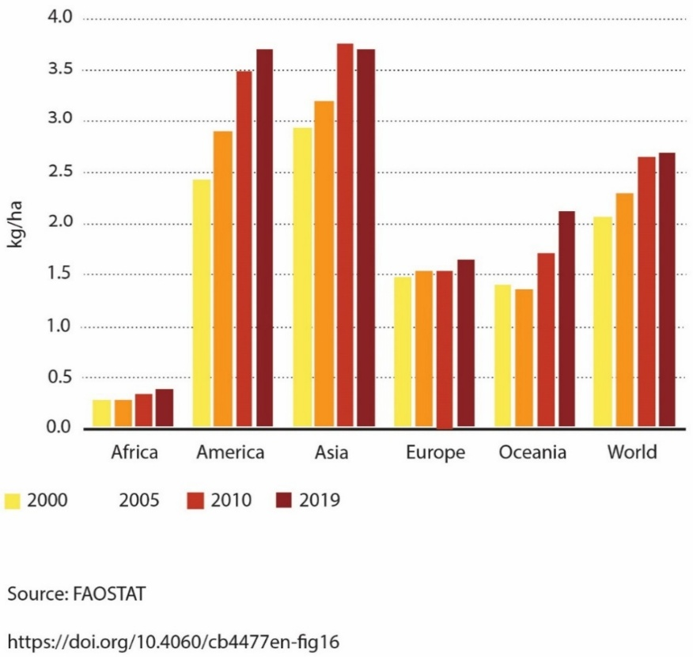
Fig. 11 איור 2.7: שימוש במדבירים (ק“ג של מדביר ליחידת שטח – 10 דונם) בין השנים 2000 ו-2019 באזורים שונים בעולם.#
מקור - FAO (2021) (FIG 16), https://doi.org/10.4060/cb4477en CC BY-NC-SA 3.0 IGO; Reprinted with permission.
2.6 ההשפעה הסביבתית של דשנים (חומרי הזנה)#
כל סוגי העיבוד שהוזכרו בתחילת הפרק משמשים כיום, אולם כאמור רוב הייצור החקלאי מתבצע על ידי החקלאות התעשייתית, שתרומתה לשיפור מצב התזונה של האנושות במחצית השנייה של המאה העשרים (המהפכה הירוקה) אינה מוטלת בספק.[86] המהפכה הירוקה אפשרה לכמה מדינות דוגמת מקסיקו, הודו ופקיסטן להגדיל במידה רבה את יבול הדגנים על ידי שימוש בזנים חדשים, הדברת מזיקים, הוספת חומרי הזנה (דישון/נוטריינטים) והכנסת טכנולוגיות חקלאיות מתקדמות. עם זאת במשך הזמן החלו להצטבר עדויות לגבי המחיר הסביבתי שגובה המהפכה הירוקה, כגון זליגת חומרי הדברה לאזורים שמחוץ לשדה ופגיעות בצמחי בר ובחיות בר. כמו כן תועדו ונמדדו זליגות של חומרי הזנה שפוזרו במטרה להעלות את התנובה לאזורים שמחוץ לשדה. נמצא שבמקרים רבים מאוד, חלק ניכר מחומרי ההזנה שהוספו לקרקע נשטף מהשדה ולא נוצל על ידי הגידולים. הדבר תקף במידה רבה לגבי חנקן ובמידה פחותה לגבי זרחן[87] ואשלגן.[88] חומרי הזנה משדות חקלאיים הגיעו למקווי מים (נחלים, אגמים ואזורי מדף היבשת בימים ובאוקיינוסים) וגרמו שם לאאוטרופיקציה (eutrophication),[89] כלומר להגברת היצרנות הראשונית (primary productivity)[90] לרמות לא רצויות. תופעה זו גורמת להצטברות של ביומסה אורגנית בגוף המים ובקרקעית, ובכך לעלייה בעכירות המים ולירידה קיצונית בריכוז החמצן המומס במים.
מעודד לראות כי בשנים האחרונות אכן חלה האטה בשימוש בדשנים בעולם, ובעיקר בחנקן, בזרחן ובאשלגן שבעניינם יש לנו נתונים (ראו איור 2.8). יש שתי סיבות אפשריות להתייצבות זאת: האחת, חלקן של החקלאות המקיימת והחקלאות האורגנית נמצא בעלייה (ראו בהמשך הפרק); השנייה, בחקלאות מקיימת ובחקלאות תעשייתית נעשה שימוש הולך וגובר בשיטות של חקלאות מדייקת (ראו לעיל). לאחרונה הוצע לטפח אזורים של אחו לח (wetland) במורד הזרימה מאזורים חקלאיים, כדי שהצומח באחו לח יקלוט את עודפי חומרי ההזנה, ובראשם חנקן, וכך יימנעו מקרים של אאוטרופיקציה.[91]
{kind=link}
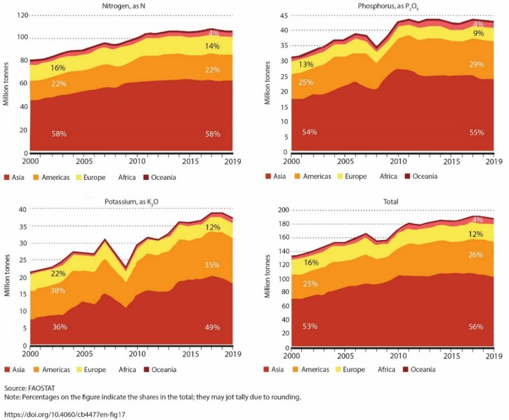
Fig. 12 איור 2.8: דישון שדות עם חנקן, זרחן ואשלגן בין השנים 2000 ו-2019.#
מקור – FAO (2021) (FIG 17), https://doi.org/10.4060/cb4477en CC BY-NC-SA 3.0 IGO; Reprinted with permission.
2.7 תרומת החקלאות לפליטות גזי חממה#
אחד הנושאים שעולה מדי פעם בפעם בהקשר של ההתחממות הגלובלית הוא חלקה של החקלאות במאזן גזי החממה. ההערכות הן שהתרומה הכוללת של פעילות חקלאית לפליטות של כלל גזי החממה היא קצת פחות מחמישית מהכמות הכוללת שפולטים בני האדם (ראו איור 5.3). אולם, פעילות חקלאית, כגון גידול בעלי חיים[92] ושדות אורז,[93] היא מקור הפליטה הגדול ביותר של שניים מגזי החממה העיקריים: מתאן (\(CH_4\)) וחמצן דו-חנקני (nitrous oxide – \(N_2O\)).[94] בשנת 2019 נפלטו לאטמוספרה מפעילות חקלאית כמויות מתאן השוות ערך לכ-3.5 גיגה-טון של פד“ח. באותה שנה, כלל פליטות המתאן עקב פעילות בני אדם היו שוות לכ-8.3 גיגה-טון של פד“ח. כלומר, הפעילות החקלאית הייתה אחראית לכ-40% מכלל פליטות המתאן ממקורות אנתרופוגנים.[95] גם פליטות חמצן דו-חנקני משדות חקלאיים הן בעיה מטרידה שעד השנים האחרונות נדמה היה שאין דרך טובה להתמודד איתה. בשנת 2024 הוגדר סוג חדש של בקטריה הנמצאת בקרקע (Cloacibacterium sp. CB-01), המסוגלת לחזר חמצן דו-חנקני לחנקן מולקולרי (\(N_2\)).[96] אם אכן אפשר יהיה לממש את הפוטנציאל של הבקטריה הזאת בהיקף נרחב על ידי פיזור תרביות של הבקטריה בשדות חקלאיים, תהיה בכך תרומה חשובה להפחתת הפליטות של גזי חממה, משום שחמצן דו-חנקני הוא גז חממה היעיל מפד“ח פי 200 עד 300. בשנת 2025 דווח על שני חידושים נוספים: האחד, פיתוח זן חדש של אורז שגידולו משחרר 70% פחות מתאן לאטמוספרה;[97] השני, דרך להפחית פליטות מתאן שמקורן בגידול חזירים.[98] עדיין נותר לראות באיזו מידה אפשר יהיה ליישם את החידושים הללו.
מעבר לפליטות מתאן וחמצן דו-חנקני, הפעילות החקלאית משחררת לאטמוספרה גזי חממה נוספים, בראש ובראשונה פד“ח. מתוך סך כל פליטות הפד“ח של הפעילות החקלאית בשנת 2018, כ-31% נפלטו מגידול בעלי חיים (כולל דגה), כ-27% מייצור חקלאי (שימוש בכלי עבודה, שרפות מבוקרות וכו«), כ-24% משינוי בשימושי קרקע וכ-18% מהובלה ושינוע של מזון.[99] עם זאת, ראוי לציין שבשני העשורים האחרונים התייצבה פליטת גזי החממה שמקורה בפעילות חקלאית (איור 2.9), בניגוד לפליטות גזי חממה משריפת דלקים פוסיליים לייצור אנרגיה הנמצאות במגמת עלייה (ראו פרקים 3 ו-5).
על אף התייצבות רמת הפליטות הנוכחיות של גזי חממה מפעילות חקלאית, היא עדיין גבוהה מדי ויש למצוא דרכים להפחיתה. ניתן להראות שאם נעלה בזכות עיבוד נכון של הקרקע את כמות החומר האורגני בחלקו העליון של פרופיל הקרקע (top soil – כ-20 ס“מ עליונים), מערך של כ-4.5% בממוצע[100] לערך של 5% בממוצע עולמי, נסלק מהאטמוספרה כ-25 גיגה-טון של פחמן,[101] השווים לפליטה הכוללת של פחמן לאטמוספרה במשך כשנתיים בקצב הפליטות העכשווי.[102] משרד החקלאות הצרפתי הציע יוזמה ברוח זאת בשנת 2019.[103] בשנת 2025 התפרסם מאמר שהראה כי הטמנת קש בעומק הקרקע מגדילה תנובה ומגדילה את כמות החומר האורגני האצור בקרקע. שיטה זאת עוד צריכה להיחקר לעומק. כלומר, ייתכן שהחקלאות המקיימת והחקלאות האורגנית יכולות לתרום גם לנושא מאזן גזי החממה בכדור הארץ.[104] עם זאת, יש מחקרים המפקפקים ביכולתה של החקלאות המקיימת למלא תפקיד מרכזי במאזן הפחמן העולמי ולהשפיע במידה ניכרת על פליטה או קליטה של פד“ח מן האטמוספרה.[105] הביקורת מופנית גם לחלקם של שינויים בדפוסי רעייה שמציג אלן סבורי (Savory) (ראו פרק 8).[106]
{kind=link}
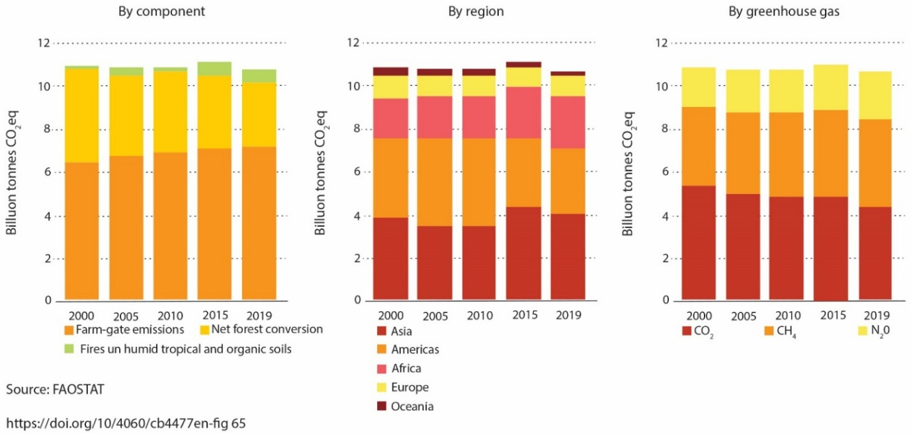
Fig. 13 איור 2.9: פליטות גזי חממה מפעילות חקלאית, השוואה במשך שני העשורים הראשונים של המאה ה-21.#
מקור – FAO (2021) (FIG 65), https://doi.org/10.4060/cb4477en CC BY-NC-SA 3.0 IGO; Reprinted with permission.
2.8 השפעת ההתחממות הגלובלית על החקלאות#
בשנים האחרונות גובר העיסוק בהשפעת שינויי אקלים על החקלאות. יש אזורים שייפגעו קשות מעליית הטמפרטורות עקב עלייה בקצב אידוי מים מהקרקע ומצמחים שתוביל להתייבשות הקרקע (בעיקר באזורים טרופיים וסוב-טרופיים).[107] אולם, יש גם אזורים, בעיקר בצפון אמריקה, בצפון אירופה ובסיביר שבהם הפגיעה תהיה פחותה, וייתכן שבחלק מהאזורים הללו תעלה התפוקה החקלאית. משתנה חשוב ביותר המשפיע על מידת הנזק הצפוי לחקלאות הוא באיזו מידה עליית ריכוז פד“ח באטמוספרה תגדיל את קצב הגידול של צמחי המאכל (\(CO_2\) fertilization).[108] ב-30 השנים האחרונות נעשו מחקרי שדה (FACE)[109] ומחקרי מעבדה וסימולציות מחשב במטרה לבדוק את הנושא החשוב הזה. מחקרים אלה הגיעו למסקנה שצמחי 3C, בעיקר חיטה, אורז ועוד כמה גידולי מפתח,[110] יגדילו את תנובתם בעקבות העלייה בריכוזי פד“ח, אולם חלק ניכר מעליית התנובה יתבטל לנוכח עליית הטמפרטורה והגידול בעקות מים.[111] צמחי 4C (המחקר התמקד בתירס ובדורה [sorghum]) לא יגדילו את תנובתם או אפילו ייפגעו מהשילוב של עלייה בריכוזי פד“ח ובטמפרטורה ובמידה פחותה גם עקב מחסור במים.[112] יש מחקרים המראים שערכם התזונתי של חלק מצמחי המאכל ייפגע בגלל עליית ריכוזי הפד“ח, אם כי ניתן להפחית את הפגיעה הזאת בעזרת בחירה מושכלת של זנים.[113]
מחקר שפורסם בשנת 2008 טען שהתחממות גלובלית תפגע במידה כזאת או אחרת בתנובה החקלאית העולמית בעיקר בארצות המתפתחות, הן מסיבות כלכליות וחברתיות והן בגלל שרבות מהן שוכנות באזורים טרופיים וסוב-טרופיים.[114] יש דיווחים מרחבי העולם המעידים שכבר כיום ההתחממות הגלובלית משפיעה על יבולים. למשל, בישראל חלה בשנים האחרונות ירידה של יותר מ-30% ביבול של חלק מעצי הפרי עקב מחסור ב“מנות קור“, כלומר בימים קרירים הנחוצים להבשלת הפירות.[115] כמו כן, בשנת 2021 התפרסמו מודלים המנבאים שבמקביל לשינוי בתנובה, ההתחממות הגלובלית תאיץ את התפשטותם של מזיקים לאזורים ממוזגים.[116] לעומת זאת, בשנת 2013 ובשנת 2016 התפרסמו מחקרים שתיעדו באמצעות ניתוח תצלומי לווין מגמת גידול בכיסוי של הצמחייה (כמות צמחים ליחידת שטח הכוללת הן צמחים לא מבויתים והן גידולים חקלאיים) על פני היבשות בעשורים האחרונים, תופעה המכונה greening effect.[117] העלייה יוחסה ברובה (70%) ל-\(CO_2\)-fertilization, [118]והיתרה התחלקה בין כמה גורמים כמו התחממות גלובלית, זמינות חנקן ושינוי בשימושי קרקע.[119] תוצאות דומות התקבלו במחקר נוסף שפורסם ב-2017 והסתמך על מדידות של קרבוניל גופרתי (Carbonyl sulfide – OCS).[120]
2.9 חקלאות מקיימת וחקלאות אורגנית – פתרון אפשרי לנזקים הסביבתיים של החקלאות#
חקלאות מקיימת או אגרו-אקולוגיה (sustainable agriculture / regenerative agriculture / agro-ecology) וחקלאות אורגנית הן מהדרכים המבטיחות ביותר להתמודדות עם ארבעה אתגרים מרכזיים הניצבים בפני האנושות. חקלאות אורגנית נבדלת מחקלאות מקיימת בכך שבחקלאות אורגנית אין כלל שימוש בדשנים ובמדבירים כימיים. לכן, מבחינת היתרון הסביבתי, חקלאות אורגנית דומה מאוד לחקלאות מקיימת. רבים סוברים שקיימת סתירה בין המאמצים להשיג את ארבעת האתגרים הללו:[121] (1) הפחתת הפליטות של גזי חממה (או אף סילוק פד“ח מהאטמוספרה); (2) הספקת מזון ל-8–10 מיליארדי בני אדם; (3) עצירת הגידול בניצול מים שפירים: כיום מנצלים בשנה כ-4,000 ק“מ מעוקב, כ-70% לחקלאות (ראו פרק 9);[122] (4) הגדלת המגוון הביולוגי[123] ומניעת הכחדתם של אבות מיני התרבות (מיני בר הקרובים גנטית למינים מתורבתים).[124] כמו כן, המעבר מחקלאות תעשייתית לחקלאות מקיימת[125] ולחקלאות אורגנית[126] הוא נתיב נוסף להפחתת השימוש בדשנים ובמדבירים על כל ההשלכות הסביבתיות שלהם. חשוב להדגיש שהמעבר מחקלאות תעשייתית לחקלאות מקיימת הוא מורכב וחייב להיעשות ללא פגיעה בתנובה הכוללת וברווח התפעולי של החקלאים.[127] עם זאת, מקילה על המעבר העובדה שהחקלאות המקיימת חסכונית יותר בהשוואה לחקלאות התעשייתית, אשר דורשת השקעה כספית ניכרת במדבירים (הדורשים סנתוז) ובדשנים. כך למשל היא דורשת השקעה כספית ואנרגטית ניכרת בתהליך הַבֶּר–בוש (Haber-Bosch) ליצירת דשנים של חנקן (ראו פרק 4) ובכריית זרחן (ראו בפרק 5).
החקלאות המקיימת מתבססת על יישום עקרונות השאולים מתחומי האקולוגיה והפדולוגיה (חקר קרקעות). ניתן לתרגם עקרונות אלה לשבעה רכיבים עיקריים:[128] (1) משטר ”אי-פליחה“: הימנעות ככל האפשר מחריש (no-till), ואם הוא הכרחי יש לעשות זאת לעיתים רחוקות ככל האפשר, תוך הקפדה על כך שהפילוח יהיה רדוד כדי לצמצם את סחיפת הקרקע[129] ואת חמצון החומר האורגני בקרקע, ותוך התחשבות בקווי הגובה ובכיוון הסחף. יש הטוענים שבמשטר של אי-פליחה קיימת סכנה של דחיסת תת-הקרקע, המובילה לפגיעה בתנובה מה שמחייב הימנעות משימוש תכוף בציוד חקלאי כבד;[130] (2) זריעת גידולי שירות (גידולים הנזרעים בין הגידולים העיקריים), במטרה להגדיל את כמות החומר האורגני בקרקע, לתרום חומרי הזנה לקרקע ולמנוע סחיפת קרקע בעקבות שיטפונות ורוח; (3) שילוב של שיחים רב-שנתיים עם עצים ולעיתים שילוב של שיחים ועצים עם צמחים חד-שנתיים באותו שדה; (4) שילוב של רעייה מבוקרת בממשק של מטעים וגידולי שדה (pasture cropping), במטרה לשפר את חומרי הזנה, לתחח את הקרקע ולסלק עשבים מזיקים;[131] (5) שימוש בדשן אורגני (קומפוסט), כמקור לחומרי הזנה ולעיתים בשילוב עם פחם ביולוגי (biochar), אף שלעיתים הוא משחרר רדיקלים חופשיים;[132] (6) הקפדה על מַחזור זרעים ועירוב גידולים במטרה להגדיל את המגוון הביולוגי ולהפחית את השימוש במדבירים;[133] (7) שימוש במדבירים לפי עקרונות ההדברה המשולבת (IPM) שהוזכרו למעלה. כאמור, עדיין יש המפקפקים במידת תרומתה של החקלאות המקיימת והחקלאות האורגנית לאגירת פחמן בקרקע,[134] אם כי חלק מהמחקרים טוענים שיש להן תרומה לא זניחה.[135] זאת בנוסף לתרומתן להפחתת השימוש בדשנים[136] ובמדבירים והחלפתם במדבירים ביולוגיים,[137] ובדשנים המגיעים בעיקר משאריות צמחים (organic fertilizers).[138]
יש כמה מוקדי מחקר בעולם[139] ובישראל,[140] שבהם בוחנים את שיטות העיבוד של חקלאות מקיימת ושל חקלאות אורגנית ומשווים בינן לבין החקלאות התעשייתית. בשנת 2021 החלה לפעול התוכנית של ארגון המזון והחקלאות של האו“ם ה-FAO במטרה לקדם חקלאות פרודוקטיבית ובת קיימה מהבחינה הסביבתית.[141] במקביל התפרסמו גם כמה השוואות בין חקלאות מקיימת לבין חקלאות תעשייתית, שמהן עולה מחלוקת בדבר מידת תרומתה של החקלאות המקיימת לפתרון בעיות סביבה. מצד אחד, יש מחקרים המצביעים על כך שלחקלאות מקיימת יש יתרון בהשוואה לחקלאות תעשייתית מבחינת קיבוע פחמן בקרקע,[142] ומצד אחר, יש מחקרים הטוענים שיתרונות החקלאות המקיימת פחותים לעומת הציפיות.[143] השוואות דומות טרם פורסמו לגבי ”משק המודל“ של משרד החקלאות הישראלי, שמקדם חקלאות מקיימת.[144]
השוואות דומות נעשות גם לגבי חקלאות תעשייתית לעומת חקלאות אורגנית. דוגמה להשוואה כזו היא המחקר של מכון Rodale בארצות הברית שנמשך 30 שנה,[145] ושמסקנותיו הן:[146] (1) החקלאות האורגנית העשירה את הקרקע בחומר אורגני, ואילו החקלאות התעשייתית דיללה אותו; (2) התנובה של השתיים הייתה דומה בשנים רגילות, אולם בשנות בצורת התנובה של החקלאות האורגנית הייתה גבוהה יותר כנראה בזכות תכולה גבוהה יותר של חומר אורגני בקרקע ששיפרה את תאחיזת המים של הקרקע; (3) החקלאות האורגנית השתמשה בפחות ממחצית האנרגיה שהושקעה בחקלאות התעשייתית; (4) שלושת ההבדלים האלה אחראים לכך שהחקלאות האורגנית גרמה לפליטות גזי חממה נמוכות ב-40% בהשוואה לחקלאות התעשייתית; (5) עקב אי-שימוש במדבירים ובדשנים כימיים, העלויות של החקלאות האורגנית היו נמוכות יותר, אך מחירם בשוק של המוצרים האורגניים היה גבוה יותר,[147] כך שהחקלאות האורגנית הייתה רווחית יותר.
מחקרים אחרים, מוקדמים יותר, הראו שאף שהתנובה של החקלאות האורגנית הייתה נמוכה בהשוואה לחקלאות התעשייתית, הפער הצטמצם כמעט לגמרי כאשר החקלאים היו מיומנים וכאשר תנאי הקרקע לא היו קיצוניים, למשל הקרקעות לא היו חומציות או בסיסיות מידי.[148] מספר מחקרים הראו שדוגמאות קרקע בחלקות אורגניות אינן נקיות לחלוטין ממדבירים, ומכילות שאריות של מדבירים כימיים, אם כי על פי רוב בריכוזים נמוכים בהרבה מקרקעות בשדות קונבנציונליים.[149] כמו כן התברר שקיימת השפעה הדדית על ריכוזי מדבירים בין החלקות האורגניות לבין החלקות הקונבנציונליות, כאשר הן היו סמוכות אחת לשנייה.[150] באופן כללי, יש כיום מגמה עולמית של גידול בחלקה היחסי של החקלאות האורגנית, אם כי בין המדינות המהוות את אסם התבואה העולמי – ארה“ב, הולנד, אוקראינה, ברזיל ואוסטרליה – רק באוסטרליה החקלאות האורגנית היא חלק ניכר (כ-10%) מכלל העיבוד החקלאי (איור 2.10).
{kind=link}
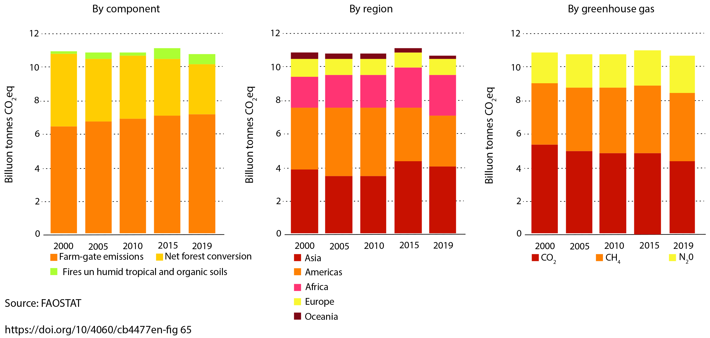
Fig. 14 איור 2.10: חלקה היחסי של חקלאות אורגנית בארצות עם האחוזים הגבוהים ביותר של חקלאות אורגנית.#
מקור – FAO (2021) (FIG 62), https://doi.org/10.4060/cb4477en CC BY-NC-SA 3.0 IGO; Reprinted with permission.
2.10 חשיבות המעבר לתזונה טבעונית בעיקרה#
מעבר למחלוקת בנושא המעבר מחקלאות תעשייתית לחקלאות מקיימת, חשוב לציין שיש מחקרים רבים הממחישים כיצד מעבר לתזונה טבעונית בעיקרה יצמצם את השטח שצורכת החקלאות (איור 2.1).[151] לאחרונה אף נטען כי מעבר לתזונה טבעונית עשוי להפחית בהרבה את פליטת גזי החממה,[152] למרות ניסיונות חוזרים ונשנים של תעשיית הבשר להציג מציאות שונה.[153] בהקשר זה, ראוי לשים לב שקיים פער גדול בין אזורים שונים בעולם לגבי צריכת חלבון ולגבי תרומתו של חלבון ממקור צמחי לעומת חלבון מבעלי חיים לתזונת בני האדם (איור 2.11). פער זה מבטא במידה רבה הבדל ברמת החיים. כדי שהעלייה ברמת חיים לא תוביל בהכרח לעלייה בצריכת מוצרים מן החי, כפי שקרה בסין בעשורים האחרונים חייב לקרות שינוי בגישה התרבותית הרואה בתזונה עתירת מזון מן החי סמל לרמת חיים גבוהה. במחקר שפורסם בשנת 2020, נטען שרק שילוב של שישה גורמים – תזונה טבעונית בעיקרה, ייצור מזון מספיק אך לא עודף, תפוקה חקלאית גבוהה, הפחתת הפסולת החקלאית, ביטול תמריצים כלכליים לחקלאות מבוססת בעלי חיים[154] והתייעלות בהפצת מזון – יבטיח את תרומתו של המגזר החקלאי לעמידה ביעד של התחממות גלובלית של 1.5° לכל היותר (ראו הרחבה בפרק 6).[155]
חשוב מאד לציין דוח שהתפרסם בשנת 2025 המפרט כיצד ניתן באמצעות שיפור תזונה והפחתת הצריכה של מוצרים מן החי להקטין בצורה משמעותית את הפגיעות הסביבתיות של החקלאות ובמקביל לשפר את מצבם הבריאותי של בני האדם.[156] נקודת המוצא של הדוח היא שמערכות המזון העולמיות נמצאות במרכזם של משברי בריאות, סביבה, אקלים וצדק חברתי. המצב הנוכחי אינו בר-קיימא משום שהוא יוצר חוסר יציבות גיאופוליטית וגורם לעליית מחירי המזון. כמו כן, הוא מוביל למשבר בריאותי, כאשר מעל מחצית מאוכלוסיית העולם חסרה גישה לתזונה בריאה. מערכות המזון הן המניע העיקרי לחריגה מהגבולות הפלנטריים (איור 2.12), במיוחד בנושאי משאבי מים (כ-70% מצריכת המים של האנושות), פליטת גזי חממה (כ-30% מפליטת גזי החממה), אובדן מגוון ביולוגי ופגיעה בשטחים פתוחים (ראו איור 2.1), מחזורים ביוגאוכימיים של חנקן וזרחן ושחרור של חומרים מזיקים (novel entities & emerging contaminants), בעיקר כחומרי הדברה.
הדוח ממליץ על מעבר לתזונת בריאות כדור הארץ (PHD - Planetary Health Diet) שהיא מסגרת תזונתית גמישה המותאמת לתרבויות שונות, המקדמת בריאות וקיימות. התזונה מבוססת בעיקר על הצומח, עם כמות מתונה של מזון מן החי ומינימום סוכרים מוספים ושומנים. להערכת המחברים אימוץ התזונה עשוי למנוע כ-10 עד 15 מיליון מקרי מוות בשנה (בין 17% ל-27% מכלל התמותה העולמית). למעבר התזונתי יש גם יתרונות עקיפים: צמצום מחלות לא מידבקות, הפחתת עמידות לאנטיביוטיקה (דרך צמצום צריכת מזון מן החי) ושיפור איכות האוויר. בנוסף לכל אלה, קיים אי-שוויון בחלוקה, כאשר 30% העשירים ביותר באוכלוסייה אחראים ליותר מ-70% מהלחצים הסביבתיים של מערכת המזון. 2.8 מיליארד אנשים אינם יכולים להרשות לעצמם תזונה בריאה, ו-34% מעובדי המזון משתכרים מתחת לשכר מחיה, ורבים חסרים זכויות התאגדות.
מחברי הדוח מציינים שכדי להשיג מערכת בריאה וצודקת עד 2050, נדרשות מספר פעולות דחופות: (1) הנגשת תזונה בריאה כך שתהיה זולה ומושכת יותר מאלטרנטיבות לא בריאות. (2) הגברת היעילות החקלאית על קרקע קיימת כדי למנוע הרס מערכות אקולוגיות. (3) הפחתת אובדן ובזבוז מזון (FLW) בכל שרשרת האספקה. (4) הגברת שימוש בחיישנים, רחפנים, רובוטיקה ו-AI (precision agriculture) תוך הקפדה על חדשנות אחראית ושוויונית. (5) הורדה של כ-36% בייצור מזון מבעלי חיים ושיקום שטחי מרעה וניהול רעייה משופר. (6) הפחתת השימוש בחומרי הדברה ב-70%. (7) הפחתת צריכת מים אל מתחת ל-2,000 קילומטר מעוקב בשנה (כ-45% מהצריכה הנוכחית). (8) הורדת השימוש בדשנים מסונתזים, בעיקר חנקן וזרחן בעיקר על ידי הגדלת היעילות והסתמכות על מחזור זרעים. (9) חיזוק כוחם של עובדים וקבוצות מוחלשות, והגבלת ההשפעה של תאגידים על קביעת מדיניות. (10) נדרשת השקעה של 200–500 מיליארד דולר בשנה למעבר לתזונת PHD.
במידה והמעבר לתזונת PHD יתרחש בקנה מידה עולמי יהיו לכך יתרונות סביבתיים חשובים: (1) תרומה משמעותית לבלימת משבר האקלים ופליטות גזי חממה. הפחתת פליטות חקלאות ויצור המזון אל מתחת ל-5 ג’יגה-טון שווה-ערך-פד“ח (ראו פרק 5) בשנה עד 2050, בהשוואה לפליטות הנוכחיות שהן כ-17 גיגה-טון שווה-ערך-פד“ח בשנה. (2) צמצום של כ-3.40 מיליון קמ“ר (כ-10%) משטח הקרקע החקלאית העולמית. (3) הפסקת הפיכת יערות ושטחי טבע טבעיים לשטחי חקלאות. (4) שיקום מערכות אקולוגיות פגועות בשטחים חקלאיים לשעבר. (5) שיקום מערכות מימיות טבעיות (נהרות, אגמים). (6) הקטנת החשיפה של בני אדם לחומרי הדברה מסוכנים.
{kind=link}
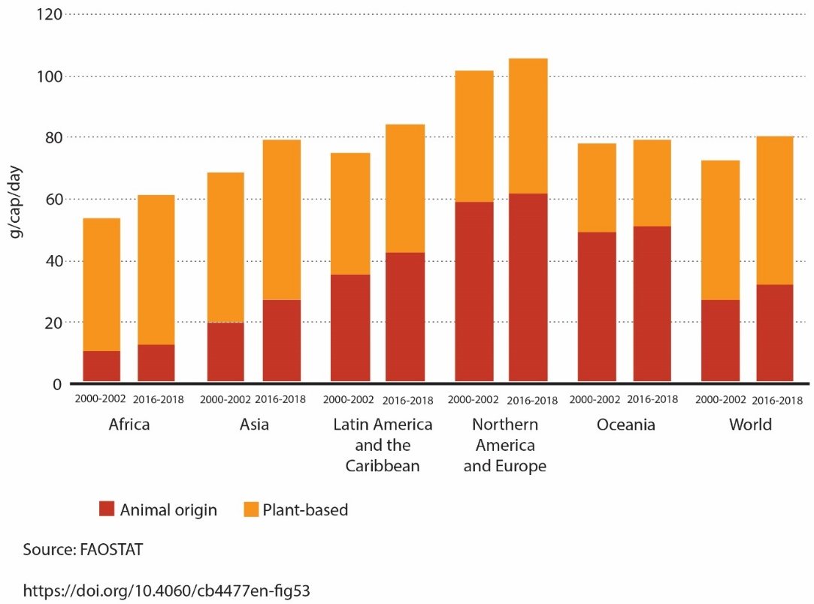
Fig. 15 איור 2.11: מקור חלבון (צמחי/בעלי חיים) באזורים שונים בעולם.#
מקור – FAO (2021) (FIG 53), https://doi.org/10.4060/cb4477en CC BY-NC-SA 3.0 IGO; Reprinted with permission.
{kind=link}
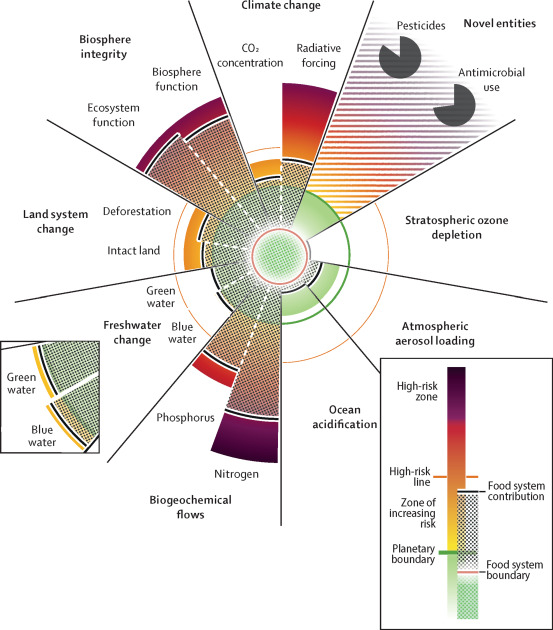
Fig. 16 איור 2.12: ”מרחב הפעולה הבטוח“ עבור מערכות המזון העולמיות והמידה שבה האנושות חורגת מגבולות אלו נכון לשנת 2025. מערכות המזון הן מניע עיקרי לחריגה מהגבולות הפלנטריים, דבר המערער את יציבות כדור הארץ כולו. שבעה מתוך תשעה גבולות פלנטריים כבר נחצו, כאשר מערכת המזון תורמת תרומה מכרעת לשש מהחריגות הללו. ראוי להדגיש שמערכת המזון אחראית כמעט לכל החריגות בגבולות של חנקן (N) וזרחן (P) עקב שימוש עודף בדשנים. עודף החנקן הנוכחי הוא 233 טרה-גרם (מגה-טון) בעוד הגבול הבטוח הוא 57 טרה-גרם בלבד. עודף הזרחן עומד על 7.2 טרה-גרם בשנה, לעומת גבול של 6.1 טרה-גרם. התרומה היחסית של החקלאות לשחרור מדבירים (pesticides) וחומרים נוגדי חיידקים (antimicrobial) במסגרת ה-NOVEL ENTITIES מופיעה בשתי עקומות פאי.#
מקור – Rockström, J. et al. (2025), The Lancet; Reprinted with permission.
2.11 סיכום#
החקלאות היא פעילות אנושית חיונית, רחבת ממדים המתפרסת על כשליש משטח היבשות, ובמקומות רבים נמשכת כבר אלפי שנים ברציפות.
הפעילות החקלאית היא נדבך מרכזי במאמץ למיגור הרעב בעולם. במקביל, גידול האוכלוסייה ועלייה מתמדת ברמת החיים מחייבים להגדיל את התנובה החקלאית, ובכך מעצימים את השפעתה הסביבתית של החקלאות.
לחקלאות יש השפעות מרחיקות לכת על הסביבה: פגיעה במבנה הקרקע וביציבותה, דלדול משאבי מים, הקטנת המגוון הביולוגי, שחרור חומרי הזנה וחומרי הדברה מחוץ לשדה המטרה ופליטת מזהמים וגזי חממה.
לחקלאות יש מספר יתרונות:
שטחים חקלאיים משמשים כמִבְלָע (sink) לתוצרי לוואי עירוניים, כגון קומפוסט ובוצת שפכים מטוהרת, המושבים לקרקע כחומרי הזנה (ראו פרק 12).
שימוש בהשקיה בקולחים מעביר לחקלאות מים שהיו בשימוש בעיר, ומאפשר להשתמש בהם בתנאי שיהיה מעקב אחר מזהמים שנותרו במי הקולחים (ראו פרק 9).
החקלאות היא מקור תעסוקה חשוב, בייחוד במדינות מתפתחות.
החקלאות מספקת שטחים ירוקים, כאשר היא נעשית בקרבת ערים (ראו פרק 12). כמו כן, יש לה חשיבות רבה מאוד בהקשר של ביטחון קרקע, ובמקרים רבים היא מגדירה את גבולות הציוויליזציה.
שדות חקלאיים משמשים שטחים פתוחים המספקים מסדרונות אקולוגיים (ראו פרק 8).
אף שהחקלאות גורמת נזקים סביבתיים, יש לה פוטנציאל גדול, בחלקו ממומש, לתרום לקידום תהליכים חברתיים וסביבתיים חיוביים.
בחקלאות טמונה גם חשיבות תרבותית ורבים מן החגים, מן המועדים ומן הפעילויות המסורתיות – קשורים בה.
חקלאות מקיימת וחקלאות אורגנית מסבות נזק סביבתי פחוּת בהשוואה לחקלאות תעשייתית: פגיעתן בקרקע פחותה, הן משמרות מגוון מינים ומגבירות את קיבוע הפחמן, ובכך מסייעות בהתמודדות עם משבר האקלים.
המעבר לחקלאות מקיימת צריך להיעשות בשילוב כוחות עם ניהול משק המים ומשק האנרגיה (”הָא בְּהָא תַּלְיָא“), כפי שנעשה באיחוד האירופי.[157]
אחת הדרכים להפחית את המדרך הסביבתי של החקלאות, בלי לפגוע ביעד של הספקת המזון, היא לצמצם את הצריכה של מזון המבוסס על בעלי חיים. יש לכך השפעות חיוביות מרחיקות לכת מבחינות רבות, כגון: הפחתה של סחיפת קרקעות (ארוזיה), צריכת מים וצריכת אנרגיה. אולם רוב תשומת הלב מתמקדת ביתרון הצפוי מהפחתת פליטת גזי חממה ומקיבוע פחמן בקרקע.[158]
במקומות שבהם המגמה היא הפוכה ומתועדת עלייה בגידול בעלי חיים, מתרבות העדויות להרעה במאזן הפחמן.[159] היתרונות והחסרונות של מעבר לתזונה טבעונית בעיקרה נסקרו בהרחבה בסדרת מאמרים.[160]
למעבר לתזונה נכונה (PHD) של מרבית בני האדם תהיה השפעה חיובית מרחיקת לכת על מערכות סביבתיות רבות.[161]